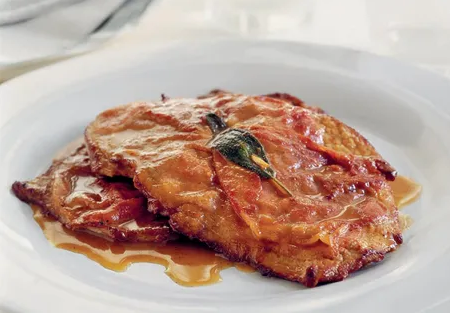

Veal Saltimbocca

Description
Veal cutlets wrapped in crispy, salty prosciutto and fragrant sage leaves. A classic Roman Dish that's pan-fried until they're juicy, tender and incredibly delicious. A simple and elegant meal thats great served with potatoes, asparagus or salad.
Ingredients
- 6 veal cutlets
- 1/2 cup all purpose flour
- 6 slices prosciutto
- 6 large sageleaves
- 1/2 cup (125ml) white wine
- 2 tbsp Olive Oil
- 6 toothpicks, to secure the cutlets
Instructions
- Place the veal cutlets between two sheets of plastic wrap (cling film) and gently beat with a rolling pin or meat mallet until 1/4 of an inch thin.
- Place a slice of prosciutto over each cutlet followed by a sage leaf. Secure everything together using a small wooden skewer.
- Dip the cutlets in flour on each side and shake gently to get rid of excess flour. Heat olive oil in a large pan or skillet and fry on each side until slightly crispy and browned. Remove from the pan and add wine to deglaze the pan.
- Scrap all the brown bits and stir until reduced by half, return the veal to the pan to heat through then serve.
Home